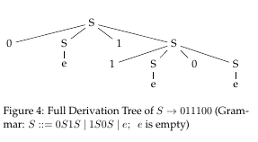

Grammars, Syntax, Semantics, and AST
Table of Contents
Abstract: A quick intro to grammars, syntax, derivation trees, and ASTs. I use these notes in multiple courses.
1 Grammars
- A language is a set of sentences. Syntax rules specify which sentences are in the language. Almost always an infinite set.
- Syntax: the form of expressions, statements, and program units. Usually in textual form. Often in abstract syntax trees (AST).
- Syntax rules use terminals (aka tokens, lexemes) and non-terminals.
- Lexemes: sequences of characters without "delimiters" and obeying certain rules. Examples: operators (+, *, …), numbers, identifier, literals, reserved words.
- Semantics: the meaning of expressions, statements, and program units.
- Grammar: A collection of production rules that generate the sentences of a language.
1.1 Chomsky Hierarchy

Figure 1: Chomsky Hierarchy
- Levels of Languages: Regex (L3), Context-Free (L2), Context-Sensitive (L1), Recursively Enumerable (L0).
1.2 Context Free Grammars (CFG)
- Defined using Terminals (Tokens aka Lexemes), and Non-Terminals
- Start Symbol (a non-terminal)
- Non-terminals aka Syntactic Categories. Non-terminals are called that because a sentence production has not ended yet.
- There is no "context"
- A grammar production rule: LHS ::= RHS
- LHS is a single non-terminal (i.e., without context)
- RHS is a seq of terminals and non-terminals
- Limitations of CFG
- Defines syntax upto a "level"
- Cannot capture "context"
- E.g., "variable should be declared before use"
- CFGs do not define semantics
- minor exceptions exist
- Every modern PL has a CFG, often several.
2 BNF Notation
- BNF (Backus-Naur Form) is a specific notation for writing down a context-free grammar. Named after its originators: Backus (Turing Award winner) and Naur (Turing Award winner).
- Examples of BNF rules:
- <identList> → identifier | identifier, <identList>
- <ifStmt> → if <logicExpr> then <stmt>
- LHS → RHS
- The LHS is a non-terminal
- The RHS consists of a seq of terminals and non-terminals
- BNF shows non-terminals within < >
- The terminals are aka lexemes.
- There are many BNF variations/ extensions.
2.1 Conventions
- The production rules generate a sequence of tokens. If the production is starting from the start non-terminal, a sentence in the language is generated.
- A rendering of a sequence of tokens as a string of characters will (usually) separate the tokens by non-empty white spaces.
- Sometimes the lexical structure is specified using CFGs. Here, the terminals are characters, and there is no white space separation.
2.2 Modern Notations
- Simplify the BNF notation.
- Drop <> from non-terminals.
- Show terminals in a different font, or quote them.
- Use {} or * for repetitions.
- See the Java Grammar (below).
3 Grammars of Real PLs
3.1 Best Practice
- Syntax of most languages is "specified" using context-free grammars.
- Almost always incompletely (because we use context-free grammars).
- Almost never ambiguously (unique derivation trees, described below). The word ambiguous is not for semantics, but for parsing.
3.2 Java
- Chapter2. Grammars [from Oracle Java] "This chapter describes the context-free grammars used in this specification to define the lexical and syntactic structure of a program."
- Chapter18. Java [from Oracle Java] "This chapter presents a grammar for the Java programming language."
- https://kotlinlang.org/docs/reference/grammar.html Kotlin grammar
3.3 C++/ C
- http://www.open-std.org/JTC1/SC22/WG14/ C
- http://www.open-std.org/JTC1/SC22/WG21/ C++
- Standard for Programming Language C++, Working Draft, 1600+ pp. 2018.
4 Semantics of Languages
- Semantics requires context, and more.
- Grammars do not "do" semantics
- Attribute Grammars do this partially.
- Semantics of most PLs is "specified" using carefully
worded English prose.
- This is (almost always) incomplete.
- This is (almost always) unclear / ambiguous.
- This is (sometimes) contradictory.
- Techniques
- Operational Semantics
- Axiomatic Semantics
- Declarative Semantics
- Denotational Semantics
- Unfortunately, no real PL has its semantics defined as above.
5 Derivation Trees
- Syntax analyzer component of a compiler determines whether the sequence of characters (in a file) is syntactically a sentence. It does this by first tokenizing (aka lexical analysis), and then parsing.
- A parser constructs a derivation tree.
- The leaves are terminals and internal nodes are non-terminals.
5.1 Derivation Tree Example #1
- A Grammar and an Example Derivation Tree. The grammar has just one production rule. 
5.2 Derivation Tree Example #2
<assign> -> <id> := <expr> <id> -> A | B | C <expr> -> <expr> + <expr> | <expr> * <expr> | ( <expr> ) | <id>

Figure 2: One Derivation Tree of A := B + C * A (Others are possible)
5.3 Derivation Tree Example #3
- Derivation tree of x + 3 * y
- From https://www.student.cs.uwaterloo.ca/~cs241/cfg/cfg.html ;;

- In the above CFG,
- ::= and <> are omitted
- id, +, *, # are lexemes
6 Abstract Syntax Tree (AST)
- A parser constructs a derivation tree. An unnamed component of the compiler then transforms/ constructs ASTs. Semantic analyses, code generation, etc. traverse the ASTs.
- None of the nodes are non-terminals. They are either terminals of the grammar, or specially introduced, but not non-terminal, nodes.
- Unfortunately, ASTs have not been "standardized".
- Eclipse Java development tools (JDT) Uses ASTs. Popular.
- JetBrains has https://www.jetbrains.com/idea/ Java/Kotlin IDE. Uses ASTs. Popular.
- JetBrains has https://www.jetbrains.com/mps/ Meta Programming System. For the development of DSLs. Uses ASTs. Popular.
- Given an AST, its textual standardized version can be algorithmically produced by traversing the AST. Intellij Idea, Eclipse, … do this.
6.1 Example AST of an Arith Exp
An AST example of
x + 3 * y+ / \ x * / \ 3 y
6.2 Example AST of an Arith Exp #2

6.3 Example AST From JTransformer FOSS

Figure 4: From JTransformer (Spot any error?)
6.4 Example AST: Euclid's Algorithm for GCD

Figure 5: Euclid's Algorithm for GCD
- Examples of AST drawings often do not show symbol-tables, but they are included.
- In the above AST: a, b were positive integers initialized by the caller.
- Exercise: Deduce the source code from the above AST
7 References
- Oracle, https://docs.oracle.com/javase/specs/jls/se8/html/jls-2.html, Chapter 2. Grammars. Chapter18. Java Reference.
- https://kotlinlang.org/docs/reference/grammar.html Kotlin grammar. Reference.
- Alessio Marchetti, http://www.nongnu.org/hcb/ Hyperlinked C++ BNF Grammar. 2018. Reference.
- http://www.open-std.org/JTC1/SC22/WG14/ C; http://www.open-std.org/JTC1/SC22/WG21/ C++. Reference.